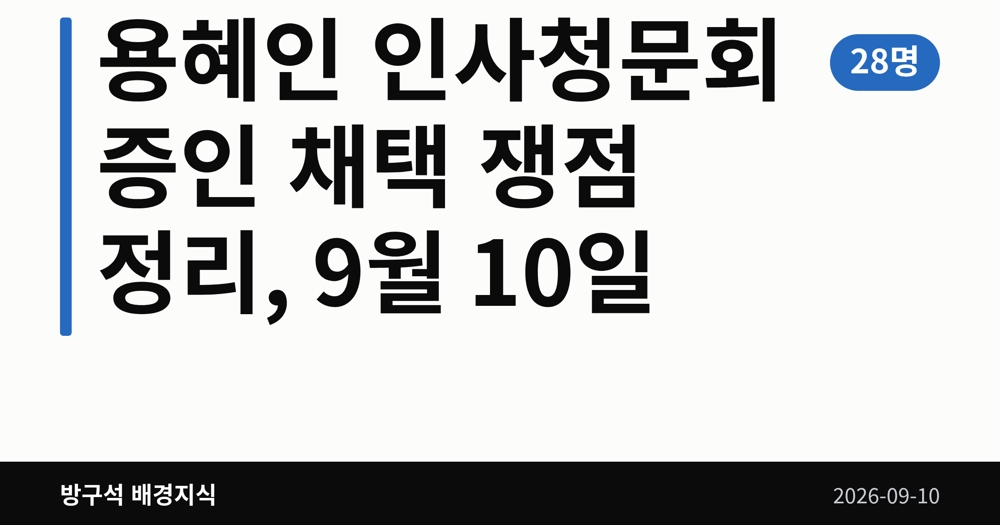
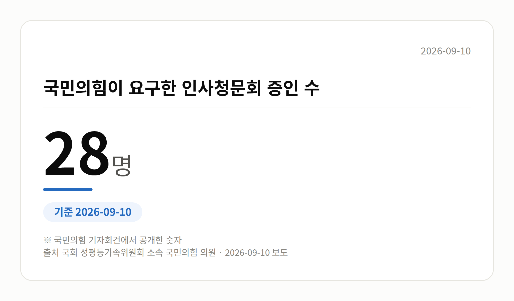

📷 대표 이미지 — 검색 목록에 이 그림이 썸네일로 뜹니다
→ 파일 img-0-cover.png 을 글 맨 위에 올리고 상자는 지웁니다

이 글은 2026년 9월 10일 기준으로 정리한 내용입니다.
3줄 요약- 용혜인 성평등가족부 장관 후보자 청문회가 증인 문제로 열리지 못했습니다.
- 국민의힘은 증인 28명을 요구했고 민주당이 27명을 거부했다고 밝혔습니다.
- 다음에 볼 것은 증인 명단 합의와 청문회 날짜 확정 두 가지입니다.
9월 10일, 용혜인 인사청문회가 결국 열리지 못했습니다. 누구를 증인으로 부를지 합의가 되지 않았고, 그 여파로 청문회 날짜까지 함께 밀렸습니다.
오늘은 이 사안을 중심으로 보고, 나머지 소식은 한 줄씩 짚어 드리겠습니다.
📷 이미지 — 국회 본관 앞 전경 사진
용혜인 인사청문회는 왜 열리지 못했나
용혜인 성평등가족부 장관 후보자에 대한 인사청문회(장관 후보자가 자격을 갖췄는지 국회가 공개적으로 검증하는 절차) 일정이 잡히지 않았습니다.
국회 성평등가족위원회 소속 국민의힘 의원들은 이날 국회에서 기자회견을 열었습니다. 이들은 증인 채택 합의에 실패하면서 청문회 개최 일정에도 합의하지 못했다고 밝혔습니다.
국정 공백을 줄이려고 일정을 조율했지만 증인 문제에서 멈췄다는 설명입니다.
숫자로 보는 증인 채택 공방
국민의힘이 공개한 숫자는 이렇습니다.
| 구분 |
인원 |
| 국민의힘이 요구한 증인 |
28명 |
| 민주당이 수용 |
1명 |
| 민주당이 거부 |
27명 |
📷 이미지 — 요구한 증인 28명과 수용된 1명을 대비해 보여주는 막대그래프
→ 파일 img-2-stat-card.png 을 이 자리에 올리고 상자는 지웁니다

국민의힘은 증인 없는 청문회는 검증이 아니라 후보자에게 변명 기회만 주는 자리가 된다고 주장했습니다.
다만 민주당이 어떤 이유로 이 증인들을 거부했는지는 오늘 확인된 자료에 담기지 않았습니다. 위 숫자도 국민의힘 발표 기준이라는 점을 함께 봐 주셔야 합니다.
한쪽 설명만 나와 있는 상태입니다.
앞으로 무엇이 정해져야 하나
지금 정해진 것은 합의가 안 됐다는 사실 하나뿐입니다. 남은 것은 증인 명단과 청문회 날짜, 두 가지입니다.
용혜인 인사청문회 재협의를 언제 하는지도 아직 공개되지 않았습니다.
📷 이미지 — 명패와 마이크가 놓인 국회 상임위 회의실 빈 좌석 사진
그 밖의 오늘 소식
- 민주당, 선관위 특검 파견검사 수사권 박탈 개정안 발의
- 정점식 국민의힘 원내대표, 기자회견 열어 개정안 비판
- 한병도 민주당 원내대표, 한동훈 의원 겨냥해 국수본 수사 촉구
- 천하람 개혁신당 권한대행, 강신철 국방부 장관 후보자 의혹 제기
- 위 사안 모두 상대측 반론은 오늘 자료에 없습니다
오늘의 체크포인트
- 용혜인 인사청문회는 증인 문제로 날짜조차 정해지지 않았습니다.
- 앞서 본 28명과 1명은 국민의힘 발표 기준 숫자입니다.
- 다음 관전 포인트는 증인 명단 합의 여부입니다.
그래서 나는?- 이번 정부 인사에 관심 있는 유권자라면, 증인 명단 합의 여부부터 확인해 보세요.
- 성평등가족부 사업을 준비하는 분이라면, 장관 임명 시점이 미뤄질 수 있습니다.
- 국회 절차가 낯선 분이라면, 증인 합의와 청문회 날짜가 묶여 있다는 점을 보세요.
직접 센 숫자 — 국회·여론조사 (최근 7일)국회의원 발의 법률안 216건. 가장 최근은 국회법 일부개정법률안(박정하의원 등 10인).
본회의 처리 법률안 18건 — 철회 1건 · 원안가결 8건 · 수정가결 9건
이번 주 등록된 선거 여론조사 9건
- 전국 정기(정례)조사 대통령선거 정당지지도 국정현안 등 — (주)코리아정보리서치 · 천지일보 의뢰 · 2026-09-07~08 · 1,000명 · 무선 ARS · 응답률 3.6% · 95% 신뢰수준에 ±3.1%p
- 전국 정기(정례)조사 정당지지도 — 미디어토마토 · 뉴스토마토 의뢰 · 2026-09-07~08 · 1,035명 · 무선 ARS · 응답률 2.4% · 95% 신뢰수준에 ±3.0%p
- 전국 정당지지도 정기(정례)조사 — 한길리서치 · 쿠키뉴스 의뢰 · 2026-09-05~07 · 1,018명 · 무선 ARS · 응답률 2.5% · 95% 신뢰수준에 ±3.1%p
오늘 이슈에 나온 법안은 지금 어디에
- 형사소송법 — 제22대 발의 161건 · 최근 「형사소송법 일부개정법률안」(박지원의원 등 13인, 2026-09-03) · 소관위 회부
열린국회정보·중앙선거여론조사심의위원회 자료를 직접 셌습니다. 여론조사의 자세한 사항은 중앙선거여론조사심의위원회 홈페이지를 참조하세요.
여러분은 장관 후보자 검증에서 증인 출석과 후보자 답변 가운데 어느 쪽이 더 중요하다고 보시나요?
댓글로 알려 주시면 다음 글에 반영하겠습니다.
#정치 #국회 #인사청문회 #용혜인 #용혜인인사청문회 #성평등가족부 #장관후보자 #증인채택 #국민의힘 #더불어민주당 #정치브리핑 #오늘의정치 #국회소식 #선관위특검 #파견검사 #특검법개정안 #정점식 #한병도 #한동훈 #김승원 #법무부장관후보자 #강신철 #국방부장관후보자 #천하람 #개혁신당 #철거민특별분양 #부정청약의혹 #국가수사본부 #정책조정회의 #방구석배경지식